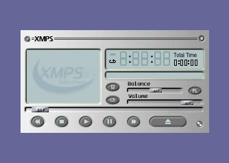
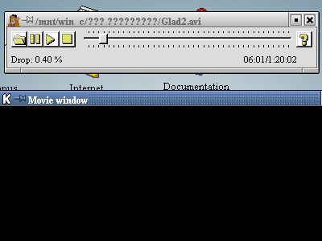
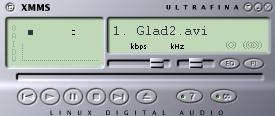
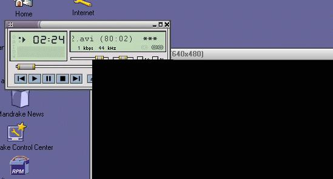
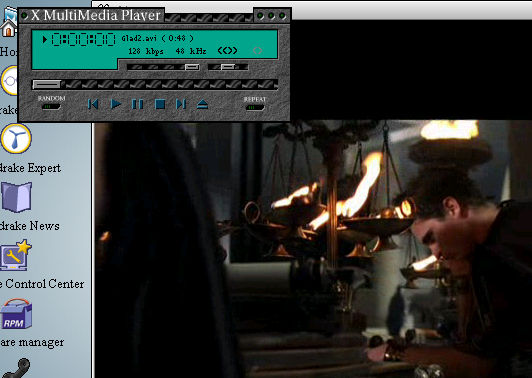
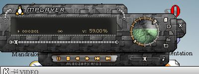
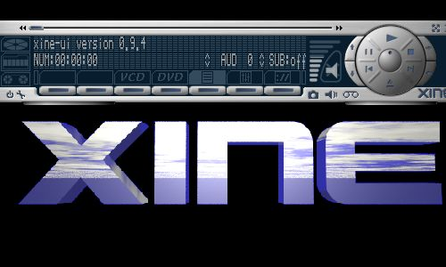

Обожаю альтернативные решения. Поэтому у меня Duron, поэтому
Linux.
Установил себе две системы. Linux для Интернета, Windows для офиса
и мультимедиа. Но хочется все в одном флаконе. Решил попробовать посмотреть DivX
под Linux’ом. Вот что из этого вышло.
Первым делом раздобыл DivX кодек (http://www.divx.com/). Заодно установил avifile библиотеку (http://avifile.sourceforge.net/) . Она позволяет использовать
Windows AVI кодеки (Indeo, Video, DivX) в Linux’е. Рекомендую скачать SDL (http://libsdl.org/) и liba52 (http://lib52.sourceforge.net/). Многие нуждаются в их услугах.
Хорошо бы поставить gcc версии 2.95. Не рекомендуется пользоваться gcc 2.96
,который предлагает RedHat. Иначе некоторые проигрыватели при компиляции начнут
ругаться неприличными словами
Все это достаточно известное ПО. Rpmfind.net быстро нашел rpm’ы
для моего дистрибутива/
Российские ученые предложили классификацию мух –дрозофил по форме
их фаллоса (http://www.science.ng.ru/). Это я к тому, что главное громко
заявить о себе. Создатели проекта XMPS (http://xmps.sourceforge.net/) сумели сделать себе высокий
рейтинг. 5 коров у http://www.tucows.com/
Даже у ребят с DivX.com есть ссылка на Xmps. Стало быть, они рекомендуют это
изделие. А пага то не обновлялась почти год. Установить этот плеер я смог. А вот
фильмы посмотреть у меня не получилось. Xmps не ругался, не вис. Но ничего не
хотел делать. Я к нему и так и этак. Со словами и без слов ... Бесполезно. Мозги
у меня, наверное, тормозят, как дешевый китайский noname-модуль. А плеер, скорее
всего, хороший, раз входит в состав дистрибутива Debian.

Следующим был avifile-player (http://divx.euro.ru/). Торопливо скачал rpm. Здорово! (Если
ищешь хоть что-нибудь, что работает.)

Фильм смотреть можно. Но интерфейс?.. Узкая полоска с кнопками и
меню настройки на правой кнопке мышки. Так как плеер использует win32
библиотеки, то можно смотреть не только DivX, но и avi файлы кодированные
другими Windows кодеками. С изумлением замечаю, что такая полезная вещь, как
ползунок не работает. Перемотать фильм тудыма сюдыма, чтобы повторить
понравившийся эпизод у меня не получилось. Разбираться не стал. Хоть и говорят,
что даже бородавка телу прибавка, снес я этот программный продукт нафиг.
Наверняка есть что-нибудь поинтересней. Правда, справедливости ради стоит
сказать, что загрузка процессора у avifile-player’а всего 47 %. Совсем не
плохо.
XMMS (http://xmms.org/).

Вот у кого с дизайном все в порядке. Скины на любой вкус. Выбирай,
не хочу.
Каждый умник знает, что xmms – стандартная суперпрограмма для
воспроизведения аудио. Оказывается, xmms может, если захочет, и кино
крутить.
Скачал плагин для просмотра AVI. Для работы xmms-avi нужно
установить avifile библиотеку и win32 avi-кодеки. Что можно сказать доброго?
Качество воспроизведения DivX фильма – твердая четверка. Но проигрыватель грузит
процессор не по детски. 88 %- это очень много. Больше всего мне нравиться, что
опять перемотка не работает. При попытке шевельнуть ползунок программа наглухо
висла. Поэтому , если у тебя сборник видеоклипов с MTV часа на полтора, то
родишь, пока дождешься любимой песни. Похоже, ребята, сделавшие этот плагин,
понимают толк в шутках. Я прекрасно осознаю, что на другом оборудовании все
будет работать, как надо. Но мне от этого не легче. У меня не самое старое
"железо". И если какая-нибудь программа на нем не функционирует, то я не выкину
комп на свалку, а найду другой софт.
Замечаю еще один печальный факт. Во время проигрывания, окно с
видео закрывает окно проигрывателя, и нет никаких легальных способов добраться
до него. Самое смешное, виртуальные экраны не работают. На всех четырех столах
одно и тоже – Фильм! Фильм! Фильм!

Не самое интересное занятие разбираться, почему какая-то программа
безбожно глючит. Но в .nix это неизбежно, подобно смерти и налогам (глупая
шутка) Попробуем найти отгадки на загадки Linux. Понятно, что для качественного
воспроизведения видео необходимо прямое обращение к видеопамяти и, весьма
желательно, аппаратное ускорение. Под аппаратным ускорением, в нашем случае, я
понимаю аппаратное YUV преобразование и масштабирование. DGA - Direct Graphics
Access, непосредственная модификация видео памяти. Но разрешать любому лазить
туда без спросу чревато последствиями. Поэтому были разработаны специальные
библиотеки, которые позволяют приложениям безболезненно выполнять подобные
действия. В Windows это DirectX. В XFree расширения, позволяющие работать с DGA
драйверами, появились, начиная с 4 версии.
С аппаратным ускорением та же история. X сервер поддерживает
расширения Xv (Xvideo), а драйвер видеокарты должен иметь Xv поддержку под
Linux. Все замечательно, но часто это хозяйство безобразно работает. Что
говорить, если даже ребята из XFree не рекомендуют использовать DGA . Вероятно
все мои неприятности это глюки XFree или видеодрайверов, а не проигрывателей. К
тому же у меня Radeon. А как я заметил, в ATI Linux не на первом месте по
популярности.
Так я думал пока не наткнулся на проект XMMP-LinuX MultiMedia
Project (www.frozenproductions.com/xmmp)

Те же библиотеки, то же оборудования. Но окна ведут себя как надо.
Хотя многие опции в меню еще не функционируют, я не в обиде. Проект новый,
развивающийся. Верю, вскоре все будет OK. Загрузка процессора зашкаливает за 90
%, но качество воспроизведения на приемлемом уровне.
Честно говоря, xmmp не плеер, точнее сказать не только плеер. У
автора проекта грандиозные планы. Он хочет, как я понял, создать программного
монстра способного не только проигрывать видео, но и создавать, редактировать,
конвертировать файлы мультимедиа. Не могу сказать ничего плохого о данных
возможностях xmmp, так как у меня не было ни времени, ни оборудования, ни
желания испытать это. А вот плеер удался.
Кстати, обратите внимание на скриншоты. Заметили разницу? На
первых двух картинках вместо видео - черная дыра. Ksnapshot не смог захватить
кадр из фильма. А при проигрывании того же видеофильма на том же оборудовании у
XMMP все нормально. Я по сей день слегка сбит с толку.
Вам необходимо узнать еще об одной программе - MPlayer - Movie
Player for LINUX (http://mplayer.sourceforge.net/ ).

Это круто. Очень быстро. Очень удобно. Множество настроек.
Работает перемотка вперед и назад! Самое качественное воспроизведение. Приличные
скины Процессор используется только на 18%. Единственное недоразумение -
проблема с окнами и виртуальными столами как у первых фигурантов. Но с этим
можно смириться, так как плеером легко управлять клавиатурой. Скажу больше. По
словам автора, запуск в X-терминале и управление кнопочками – основной режим
работы. Кроме того! Если у тебя есть соответствующее оборудование, можешь
управлять проигрывателем инфракрасным пультом. Для любителей, существует и GUI
версия программы. К сожалению, скрипт configure с ключом –help не объяснил мне,
как включить поддержку графического интерфейса.
А все очень просто.
/.configure -- enable-gui
make
make install
В результате получаете 2 файла, mplayer и его Gui версию -
gmplayer.
По иронии судьбы, после инсталляции пакета, исполняемый файл будет
называться - mplayer . Так же как плеер проекта XMMP. Честное слово. ( Может это
новый способ борьбы с конкурентами?)
Дамы и господа! (или как вы себя сами называете). Последним
номером нашей программы будет XINE (http://xine.sourceforge.net)/).

Проигрыватель поддерживает следующие видеокодеки: mpeg 1/2,mpeg
4,DivX,motion jpeg , AVI (используя win32 кодеки: indeo 3.1-5.0, cinepak, Window
Media 7/8) . Умеет он работать и с audio: mpeg audio (layer 1,2,3),a/52 (ac3,
dolby digital), dts , vorbis, pcm, DivX audio. Неплохой список.
Первое впечатление - ничего особенного. Те же непонятности с
окнами. Жутко неудобное управление. Нестандартное. Чтобы открыть файл или
каталог, необходимо не только установить на него курсор и ткнуть мышкой, но и
вдобавок к этому надобно еще щелкнуть по кнопке Select. Без сомнения, вы
научитесь управлять xine, если посидите и поэкспериментируете часок-другой, но
меня увольте. Кроме того, это чудо несколько раз зависало по непонятным
причинам. Из плюсов можно отметить неплохую коллекцию скинов и небольшую
нагрузку на процессор. По моим наблюдениям всего 22 %. Это положительно
сказывается на качестве воспроизведения и количестве поклонников. Что можно еще
добавить? Коровий сайт (http://www.tucows.com/) одарил программу четырьмя телками. Я,
скорее всего, не буду пользоваться xine. Однако мое мнение не так уж важно. У
вас своя голова на плечах.
Резюме:
-
Оставил у себя два Mplayer’а. Один как самый корректный для
моего железа. Второй за быстроту и качество воспроизведения.
-
Фильмы DivX смотреть под .nix можно. И хотя Sasami или Bsplayer
по-моему лучше, ситуация с плеерами в Linux выглядит благоприятно
-
Так как у всех плееров, кроме xmmp, проблемы с окнами и
виртуальными экранами, я заменил свою видеокарту Radeon VE на старую S3 PCI.
Проблемы c окнами исчезли, как по волшебству. Но видео стало заметно
тормозить. К сожалению, многие производители железа не жалуют .nix. Драйвера
под новое оборудование появляются с большим опозданием. И очень часто делают
эти самые драйвера не производители, а энтузиасты со всего мира. Понятно, что
нужно время, чтобы все отладить. Новые сапоги всегда жмут.
Нужен совет? Есть три решения проблемы:
-
Объявить бойкот. Не покупать железо фирм, коим юзеры Linux по
фиолетовому. Пускай “фирмачи” позеленеют от злости. Способ смешной и не
слишком практичный.
-
Составить черный список гадов и без всяких церемоний завалить их
почтовые ящики спамом или гневными письмами. Первым номером у меня будет - ATI
Technologies. Способ еще “мудрее”, чем первый.
-
Написать драйвер самому. Как говаривал Козьма Прутков: “Кто
мешает тебе выдумать порох непромокаемым?”
P.S. Все программы я проверял на своем домашнем компьютере :
Процессор - Duron 600
Память - 192 Мb
Видеокарта - Radeon VE
32 DDR
ОС- Linux Mandrake 8.0, ядро 2.4.3 , Xfree
4.1.0